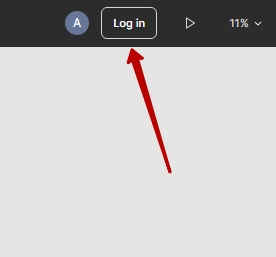
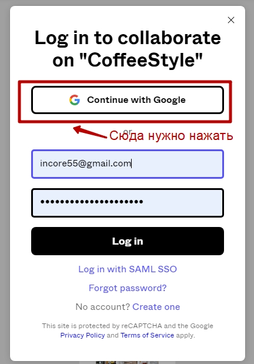

Задача на верстку
-
Тут макет
того, что
нужно сверстать
-
Чтобы была возможность смотреть и редактировать, приближать и отдалять макет нужно нажать на кнопку log in

Далее нажно авторизоваться с помощью гугла

- Чтобы продожить работу, ознакомься с кратким руководством по figma здесь
Обрати внимание, что там указаны в тексте кнопки для Макбуков и нужно держать в уме, что слово Cmd
равняется Ctrl на Windows
-
Теперь, что требуется сделать:
- Нужно создать новую папку и в ней файлы index.html (верстка) и styles.css (стили). Так же нужна будет
директория для изображений (img)
- Шрифты можно пока что не подключать, выбрать какой-нибудь из имеющихся (прим. "Segoe UI", Tahoma,
Geneva,
Verdana, sans-serif )
- Воссоздать сайт, который приложен в п.1 этой инструкции
Обрати внимание! Многие блоки, заголовки и карточки товаров похожи друг на друга, их можно
переиспользовать с помощью стилей, а не создавать каждый раз новые
ВАЖНО!!! Постараться сделать так чтобы сайт по отступам и размерам соответствовал тому, что дан в
дизайне